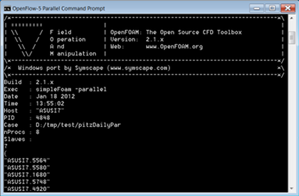

OpenFlow: A Native Windows Port of OpenFOAM
Are you looking for a GUI driven, integrated simulation environment for Windows, Linux, and Mac incorporating a selection of the RANS OpenFOAM solvers and various import/export filters?
 Caedium Professional
Caedium Professional

*Discontinued Sept. 3, 2013: OpenFlow command-line binaries are no longer available for purchase*
OpenFlow is a native Windows (without emulation) port of OpenFOAM®1 2.1.x. OpenFOAM is a versatile multi-physics, open source2, simulation toolbox - renowned for its wide support of numerous Computational Fluid Dynamics (CFD) methods.
OpenFlow on Windows
You can purchase a complete set of OpenFOAM solvers and utilities as command-line applications for Windows 64-bit with native parallel capability, packaged within a convenient Windows installation wizard. This is provided as a convenience to those who don't have the resources to modify and cross compile3 the OpenFOAM source. The license is not time limited, i.e., it extends indefinitely for the release you purchase.
Purchase with confidence with our 30 day money-back guarantee. Once your payment clears you will receive email instructions on how to download the OpenFlow installer.
Support
A dedicated OpenFOAM discussion forum is hosted at CFD Online.
Fluid Flow Solvers
OpenFlow includes support for:
- Incompressible flow
- Compressible flow
- Multiphase flow
- Combustion
CFD Methods
OpenFlow includes support for:
- Reynolds-Averaged Navier-Stokes (RANS)
- Large-Eddy Simulation (LES)
- Direct-Numerical Simulation (DNS)
Mesh Generators
OpenFlow includes support for:
- Block-structured hexahedra elements (blockMesh)
- Unstructured hexahedra dominant elements with snap to surface (snappyHexMesh)
Import Utilities
OpenFlow includes support for:
- CFX
- FLUENT
- STAR-CD (not CCM+)
Export Utilities
OpenFlow includes support for:
- EnSight
- Fieldview
- FLUENT
- Tecplot 360
- VTK
Windows HPC Server 2012
job submit example on Windows HPC Server 2012 for simpleFoam:
job submit /jobname:simpleFoam-jobName /name:simpleFoam-taskName /numprocessors:16 /stdout:\\CRAY01\<of-case>\stdout.txt /stderr:\\CRAY01\<of-case>\stderr.txt mpiexec -env WM_PROJECT_DIR \\CRAY01\OpenFlow-5 -env MPI_BUFFER_SIZE 20000000 -env USERNAME openfoam -env PATH \\CRAY01\OpenFlow-5\platforms\win\bin;\\CRAY01\OpenFlow-5\platforms\win\bin\mpi simpleFoam -parallel -case \\CRAY01\<of-case>\pitzDaily
Note you need to share both the case (\\CRAY01\<of-case> - arbitrary name of your choosing) and application directories (\\CRAY01\OpenFlow-5) so all nodes on the cluster can access them.
Experimental GPU Linear Solvers
For details see "GPU v0.2 Linear Solver Library for OpenFOAM".
To enable set the additional path variable:
set PATH=C:\Program Files\OpenFlow-5\platforms\win\bin\cuda;%PATH%
System Requirements
- Windows XP, Windows Vista, Windows 7, or Windows 8
- 64-bit only
- 430 MB free disk space
- [optional] Parallel requires either:
- Free Microsoft HPC Pack 2012 MS-MPI Redistributable Package - included in OpenFlow installer for a multi-core computer
- Microsoft Windows HPC Server 2012 for a cluster
- [optional] NVIDIA CUDA-enabled device for GPU Linear Solvers
Features
Our OpenFlow distribution has the following features:
- Single precision - permits larger problems compared to double precision within the same memory constraints
- No libccmio
- No libcgns
- No UNIX job control scripts
- No ParaView - though it is freely available
Notes
- OpenFOAM is a registered trademark of OpenCFD and is unaffiliated with Symscape.
- OpenFOAM is licensed under the GNU Public License (GPL).
- The source code modifications for Windows are freely available in accordance with the GPL.
- By purchasing OpenFlow you gain access to that specific version (e.g., v4) and any minor enhancement and bug fix versions (e.g., v4.1.2). To access the next major OpenFlow version (e.g., v5) you will need to purchase another license.